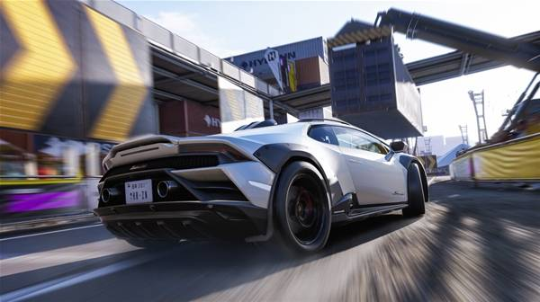

FH6 System Requirements
Minimum & Recommended PC Specifications for Optimal Performance
Overview
Forza Horizon 6 is a demanding open-world racing game set in Japan. Before purchasing, ensure your PC meets the system requirements to enjoy smooth gameplay with beautiful graphics and fast-paced racing action.
💡 Quick Recommendation
For best experience: Aim for the recommended specs or higher to run FH6 at 1080p/60fps with high settings. The game benefits greatly from SSD storage and modern CPUs.
Minimum System Requirements
These specifications allow you to run Forza Horizon 6 at low to medium settings at 1080p resolution with acceptable frame rates (30-45 FPS).

FH6 system requirements overview - check your PC specs before playing
| Component |
Minimum Specification |
| Operating System |
Windows 10 22H2 (version 19045) or higher |
| Processor (CPU) |
Intel Core i5-8400 OR AMD Ryzen 5 1600 |
| Memory (RAM) |
16 GB RAM |
| Graphics Card (GPU) |
NVIDIA GTX 1650 OR AMD RX 6500 XT OR Intel Arc A380 / Arc B390 |
| DirectX |
Version 12 |
| Network |
Broadband Internet connection required |
| Storage |
SSD recommended (approximately 100+ GB available space) |
⚠️ Important Notes for Minimum Specs
- Expect 30-45 FPS at 1080p with low-medium graphics settings
- Load times will be slower on HDD - SSD is strongly recommended
- Some visual effects may need to be disabled for stable performance
- Online features require constant internet connection
Recommended System Requirements
These specifications provide optimal performance at 1080p/60fps or 1440p with high to ultra graphics settings for the best Forza Horizon 6 experience.
| Component |
Recommended Specification |
| Operating System |
Windows 10 22H2 or Windows 11 (64-bit) |
| Processor (CPU) |
Intel Core i7-10700K OR AMD Ryzen 7 3700X |
| Memory (RAM) |
16 GB RAM (32 GB for future-proofing) |
| Graphics Card (GPU) |
NVIDIA RTX 3070 OR AMD RX 6800 XT |
| DirectX |
Version 12 |
| Network |
Broadband Internet connection |
| Storage |
NVMe SSD (100+ GB available space) |
✅ Benefits of Recommended Specs
- Smooth 60+ FPS at 1080p with high-ultra settings
- Fast loading times with NVMe SSD
- Better crowd density and traffic AI
- Enhanced weather and lighting effects
- Ready for future game updates and DLC
Performance Optimization Tips
If Your PC Meets Only Minimum Specs:
- Resolution: Stick to 1080p (1920x1080)
- Graphics Preset: Use Low or Medium settings
- Disable: Motion blur, depth of field, ambient occlusion
- Reduce: Shadow quality, reflection quality, car detail
- V-Sync: Enable to prevent screen tearing
- Background Apps: Close unnecessary programs while gaming
For Best Performance on Any System:
- Update graphics drivers to latest version
- Install game on SSD (not HDD)
- Set Windows power plan to "High Performance"
- Enable Game Mode in Windows Settings
- Close browser tabs and background applications
- Keep sufficient free disk space (20% of SSD capacity)
Common Issues & Solutions
Game Won't Launch
- Verify all minimum requirements are met
- Update Windows to latest version (22H2 or newer)
- Install latest DirectX runtime
- Update GPU drivers from manufacturer website
- Verify game files integrity
Low FPS / Stuttering
- Lower graphics settings gradually
- Reduce resolution if needed
- Close background applications
- Check CPU/GPU temperatures (thermal throttling)
- Ensure game is installed on SSD
Crashes During Gameplay
- Update graphics drivers
- Lower overclock settings if applicable
- Reduce graphics quality settings
- Check for Windows updates
- Verify sufficient RAM availability